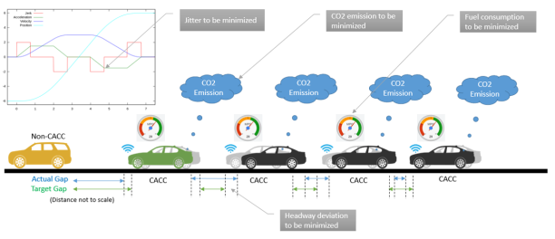
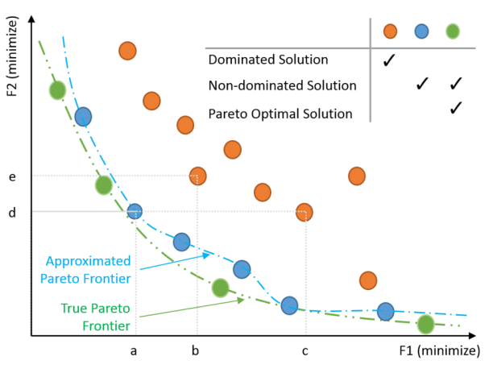
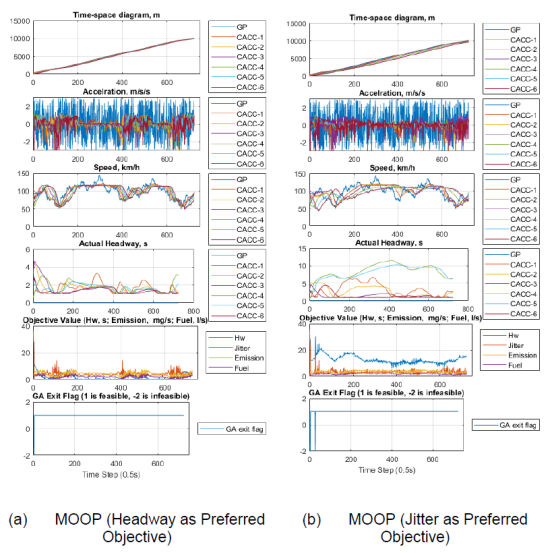

As CACC technology has been getting more and more mature, a system wide optimal controlling scheme for CACC platooning has become crucial in ensuring the full use of the technology.
Non-optimization or pseudo-multi-objective optimization is somehow inadequate in providing such generality as well as flexibility for optimal cooperative driving.
This study proposes a multi-objective optimization-based framework to determine optimal driving maneuvers for CACC (a.k.a.,MOOP-CACC) in the automated platooning condition.
The MOOP-CACC method is able to adopt wide range of objectives and find multiple trade-off optimal solutions utilizing vehicular information
MOOP-CACC Framework Overview
Objective functions
Desired headway deviation
Safety following headway
Vehicle jitter
Fuel Consumption & Carbon Dioxide Emission
MOOP-CACC Platoon Controlling Scheme
Pareto-opitmality
Non-dominated solutions
Primary objective sensitivity
Platoon behavior varies by the primary objective